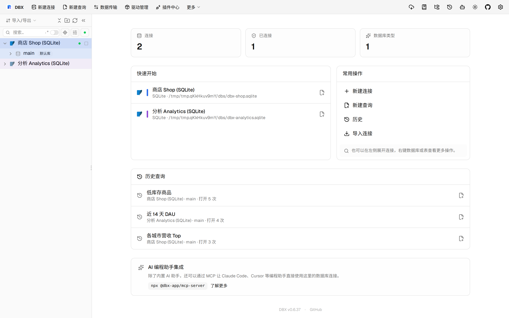
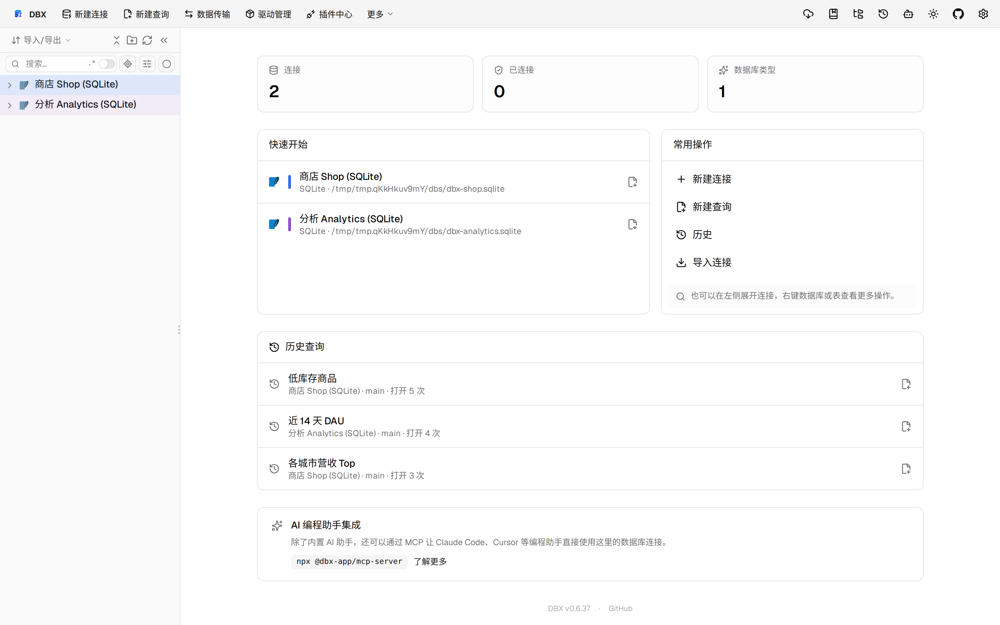

#11507 界面预览
commit 9545e77 · 回到 PR · 这个 PR 把“立即备份”对话框的连接选择改成可多选，并在多连接时增加了范围和文件名限制提示；同时支持一次提交多个备份任务，结束后显示按成功/失败/取消汇总的提示。
⚠️ 这次录制有 16 步没能按计划执行；带 ⚠️ 的截图拍摄于步骤失败之后，画面未必是说明文字所描述的状态。
红线是鼠标走过的轨迹，红色圆环是一次点击；底部文字是这一步在做什么。多个场景各自从应用初始状态开始。空格暂停，← → 逐段查看。

⚠️ 打开立即备份并多选连接 · 查看立即备份对话框的连接选择与基础表单
 ⚠️ 打开立即备份并多选连接 · 查看多选后的连接计数、范围提示和多连接限制
⚠️ 打开立即备份并多选连接 · 查看多选后的连接计数、范围提示和多连接限制
 ⚠️ 验证多连接的文件名限制并开始备份 · 查看多连接时必须包含 runId 的提示
⚠️ 验证多连接的文件名限制并开始备份 · 查看多连接时必须包含 runId 的提示
 ⚠️ 验证多连接的文件名限制并开始备份 · 查看开始备份按钮恢复可用的状态
⚠️ 验证多连接的文件名限制并开始备份 · 查看开始备份按钮恢复可用的状态

⚠️ 验证多连接的文件名限制并开始备份 · 查看批量备份完成后的汇总提示